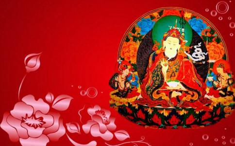

莲花生（梵文Padmasambhava）或莲华生，梵语音译为巴特玛萨木巴瓦，印度僧人。印度乌仗那国（即今之斯瓦特）人，建立藏传佛教前弘期传承的重要人物，西藏密宗红教开山祖师，常被尊称为大师、大士、咕噜仁波切（意即上师仁波切）等。公元八世纪，莲花生应藏王赤松德赞迎请入藏弘法，他以密宗法术一一收服藏地凶神邪崇，使之立誓拥佛法，并与堪布菩提萨埵建立桑耶寺。他还教导藏族弟子学习译经，从印度迎请无垢友等大德入藏，将重要显密经论译成藏文，创建显密经院及密宗道场，发展在家、出家两种僧团制，奠定了西藏佛教的基础。藏传佛教尊称他为洛本仁波且（轨范师宝）、古如仁波且（师尊宝）、乌金仁波且（乌仗那宝）。通称白麦迥乃（莲花生）。
莲花生大士生平
据多罗那他于1610年所著《莲花生传》所载，约于摩揭陀国天护王时出生于乌仗那王族。一说系乌仗那英迪拉菩提（印度金刚乘始祖，著有《秘密集会》）之子。初名莲花光明，后通晓声明及各种明处，得名莲花金刚。旋又依真言阿阇黎寂色学事、行、瑜伽三部密法，得密号为莲花生。其后又从瑜伽师乐天及瑜伽母乐持学无上部法。他曾周游印度、广访密法大师，成为佛吉祥智的四个证得现法涅盘的弟子之一（另外三人为燃灯贤、极寂友、王种罗睺罗）。他又从吉祥师子学法。据智慧海王所著《莲花生传》载，他从吉祥师子学大圆满法以后，曾到中国的五台山学习天文历数。他的上师佛吉祥智也曾立志朝礼五台，他的同学无垢友也到过汉地。所以莲花生一派传授的教法有很浓厚的汉地禅宗色彩。莲花生大士被认为是藏传佛教初兴之时的大阿阇黎，开创了藏传佛教。藏人非常敬爱莲花生大士，因此称他为“咕噜仁波切”，意为“宝上师”或“珍贵的上师”，或有时称他为“白玛卡拉”或“白玛炯涅”。莲花生大士也被称为“莲花生大师（莲师）”。
在藏王赤松德赞去世后，莲花生大士骑着光线离开西藏，前往罗刹国调化罗刹众生。莲花生大士在西藏待了多久，有几种不同的说法，比较公认的说法是56年。其实莲师在西藏的大部分时间是用于造访各大圣地、加持、藏法宝等等，因此似乎大部分西藏平民都没遇到他。在藏地雪域，旧派（宁玛巴）、新派（噶当、格鲁、萨迦等）的持教大德，多数是莲化生大士的化身。如第四世班禅乐桑曲坚云：“大智成就莲花生，化身具德阿底峡，又化罗桑扎巴华，我无其余皈依境。”意思是，前弘时期开创藏地佛法的莲花生大士，化身为后弘时期再弘佛法的阿底峡尊者，又化身为具德宗喀巴大师，除了这三者以外，我没有其他皈依境。由此可以看出，此三大教派的祖师皆为同一化身。第二世达赖喇嘛格邓江措也说：“成就持明莲花生，五百顶饰阿底峡，金刚持佛宗喀巴，异身游舞吾顶礼。”成就持明者的莲花生大士，印度五百班智达之顶饰的阿底峡尊者，藏地与金刚持无二无别的宗喀巴大师，这三者显现上身体不同，实际上是一个本体。《莲师略传》云：“尔时上地名萨迦，父名文殊母度母，其二所生吾化身，子名根嘎嘉村者，彼将重修吾殿堂。”意即在上方一个叫萨迦的地方，父亲名为文殊（蒋华），母亲名为度母（卓玛），他们的孩子根嘎嘉村（萨迦根嘎嘉村，《萨迦格言》的作者），是我莲师的化身，将来会修复我的殿堂。
对于莲花生大士，我们不能看成是一个普通人。而现在有些人，只把莲师视为对藏地贡献较大的一位瑜伽士，这是非常不对的。莲师真的跟佛陀无二无别，有些史书中说，他是过去、现在、未来三世诸佛的化现，而且每一尊佛要传授密法时，都不能以化身形象，而要示现报身形象（如莲花生大士）。就像释迦牟尼佛传授《时轮金刚》时，现出时轮金刚威猛相，向特殊的弟子来传授密法，这就是显示报身。莲花生大士并非只是藏传佛教承认，其实显宗经典中也有明确授记。藏文的《涅槃经》中说：“我已灭度后，汝等莫忧伤，无垢彩湖中，较我胜士夫。”《诸佛未来授记经》中也说：“我已灭度后，一百十二年，较我甚殊胜，名为莲花生。”还有《无垢称天女经》中也说：“十方三世一切佛，事业归为一体相，殊胜稀有之佛子，生于邬金西北隅。”这跟七句祈祷文所讲的一样，即指十方三世诸佛的事业幻化为圣尊的形象，此相是非常稀有的一位佛子，邬金国王恩扎布德去大海时遇见了他，当时他降生于邬金西北隅的莲蕊之中。这是显宗经典里讲的，不是密宗续部所言，密宗续部介绍莲师生平的非常多，但有些显宗习气重的人不一定承认。此外，显宗的《秘密不可思议经》中也说：“贤劫三世佛，奇妙幻化身，稀有莲蕊中，现为持明者。”贤劫诸佛的奇妙幻化身，在稀有的莲蕊中，化现为持明者形象，毫无疑问，这持明者就是莲花生大士。这些授记，任何比较公正的智者看了，都不得不生欢喜心和信心。当然，莲花生大士的功德，并不是依靠几个教证来说明就可以了，其实看看他的事业，就可以判断他是不是诸佛菩萨的化现。若没有当年藏王赤松德赞和阿阇黎菩提萨埵迎请莲花生大士，那么在非人如此猖獗的藏地，很难弘扬开来这么殊胜的教法。正因为莲师来藏地降伏了十二护地母和二十一优婆塞，让他们承诺永远护持藏地的佛法如意宝，并且自己也行持密法，同时建造有殊胜缘起的各大寺院，降伏了种种魔障……大小乘佛法、尤其是密宗法要，才得以在藏土上遍地开花、兴盛不衰。到目前为止，藏地全民信教的传统，跟其他任何地方都不同，甚至国内外很多信徒来到这里，出离心、菩提心、证悟觉性油然而生，很长时间对上师三宝的信心都不退转，究其原因，无不归功于莲花生大士的殊胜加持。
莲师八变
莲花生大士为了普度众生，具有八种变相，此又称莲师八变。
（一）海生金刚（GuruOrgyenDorjeChang）：最初，阿弥陀佛心间的“舍”字，投射到邬金达那够夏大海的莲花上，莲蕊中诞生了一位八岁童子。邬金国王恩札布德膝下无子，因其乐善好施，不时供养三宝，故国库空虚，于是到大海里取宝。在回程途中，大臣紫那木扎首先见到莲师，接着国王也见到了，对其生起极大信心，迎请到宫中作为太子，赐名“海生金刚”。
（二）忿怒金刚（GuruDorjeDrolo）：莲师降伏了奸臣之子，国王将其流放到尸陀林。他在不同的尸陀林中，为有缘的人与非人宣说了种种殊胜法门；对无缘的对佛法有邪知邪见的鬼神，以忿怒金刚的形象全部降伏。
（三）释迦狮子（GuruShakyaSengeyi）：在印度金刚座，莲师示现种种神通，说自己是自生之佛陀。很多人不信，并加以诽谤。为把这些众生引入解脱道，他在扎巴哈日上师座下示现出家，此时被称为释迦狮子。
（四）爱慧莲师（GuruLodenChokse）：莲师于西日桑哈、桑吉桑瓦（佛密）等诸多上师面前，得受了以大圆满为主的众多显密教授。他听闻任何一部经典和续部，都能了如指掌、通达无碍，故叫做罗丹确哲，汉译为“爱慧”。
（五）班玛托创匝（GuruPadmasambhava）：莲师在萨霍国示现种种神变，国王不承认他的成就相，命人堆积木柴焚烧他。结果烈火变成了湖，木柴变成了莲花，莲师端坐在莲花上，颈上挂着骨鬘以作庄严，没有受到丝毫损伤，此时叫班玛托创匝。托创匝即颅鬘妙力之义，指莲师用骷髅鬘装饰身体。
（六）莲花王（GuruPemaGyalpo）：萨霍国王和大臣们对莲师生起极大信心，请他担任国师十三年，并从国库里取出珍贵的衣饰、莲花帽等作供养。莲师戴着莲花帽，这时叫班玛加波，即莲花王。
（七）日光莲师（GuruNyimaOser）：在格拉佐尸陀林，莲师示现种种禁行，给空行母们传授密续法门。并降伏了一些鬼神，对其宣说诸多妙法，在日光上显示各种神变，故叫革日宁玛沃热，即日光莲师。
（八）狮吼莲师（GuruSengeDradog）：在印度金刚座，莲师于辩论中击败了五百邪见外道，并依靠咒术的威力降伏了他们，使外道们屈服并皈入佛门，此时叫革日桑给扎周，即狮吼莲师。
莲花生大士心咒
嗡啊吽班则儿格热巴玛色德吽
OmAhHumVaJraGuruPedmaSiddhiHum
注：“则儿”连读
莲花生大士7句祈祷文
吽
邬金刹土西北隅
莲花蕊茎之座上
稀有殊胜成就者
世称名号莲花生
空行眷属众围绕
我随汝尊而修持
为赐加持祈降临
革日班玛斯德吽
简而言之，第一句为莲师出生之地；第二句为莲师降生之方式；第三句为莲师之稀有功德；第四句为莲师圣名之殊胜；第五句为莲师之眷属；第六句为随修者对莲师之信心；第七句为莲师加持赐成就；第八句以咒语印持。